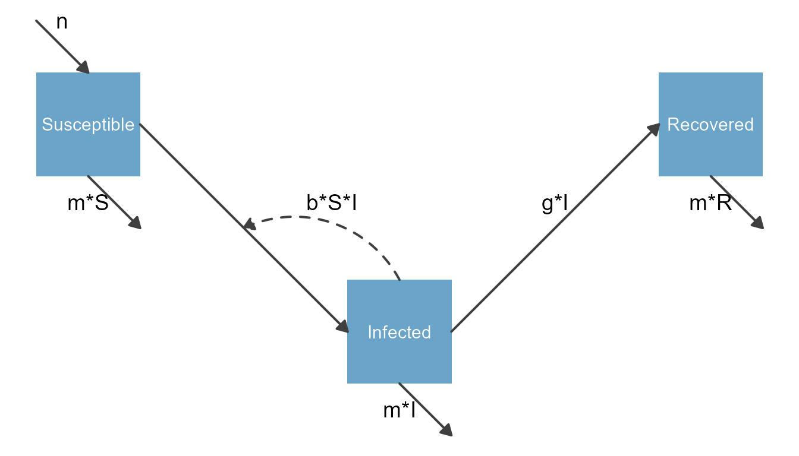
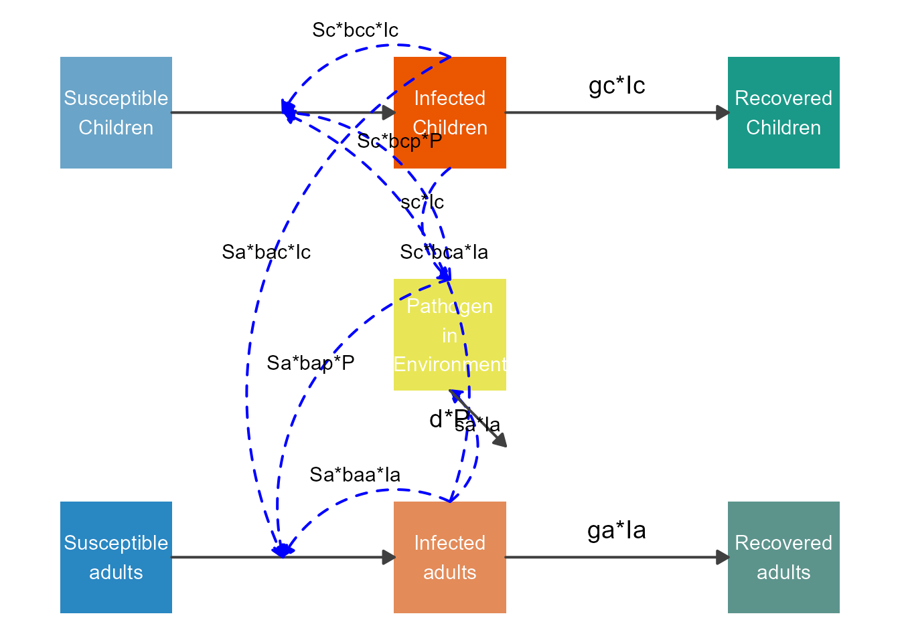

Basic modification of diagrams
Source:vignettes/B_modify_diagrams_simple.Rmd
B_modify_diagrams_simple.RmdIntroduction
We assume you went through the getting started vignette and know the basics of using flowdiagramr. In this vignette, you will learn the simplest ways of customizing diagrams. Further vignettes show more advanced approaches.
Setting arguments in make_diagram
The last example of the getting started vignette showed an example on how to customize the diagram by supplying the make_diagram function with an optional list argument diagram_settings. This list argument lets you specify a lot of graphical settings to quickly change the look of your plot. The help file for the function shows you all the settings you can customize, you can look at it with this command
help('make_diagram')We are not showing all the options here (you’ll see them when you call the help file), but let’s explore some of those options and what they do.
To illustrate this approach, we’ll play with an extension of the SIR model. For this extension, we also include natural births and deaths. We assume new births only enter the S compartment at some fixed flow, n, while deaths occur at rate m out of all compartments. The model is specified as follows
# specify the model
varlabels = c("S","I","R")
flows = list(S_flows = c("n", "-b*S*I", "-m*S"),
I_flows = c("+b*S*I","-g*I", "-m*I"),
R_flows = c("g*I", "-m*R"))
sirmodel = list(varlabels = varlabels, flows = flows)First, we need to call prepare_diagram to make the list of data frames needed as input for make_model. We’ll skip over this step again for now, you’ll learn more about these data frames and how to potentially modify them, in a later vignette.
# prepare inputs
sir_diagram_list <- prepare_diagram(sirmodel)Now, let’s produce a basic diagram by calling make_diagram with its defaults.
# make a default diagram
default_diagram <- make_diagram(sir_diagram_list)
plot(default_diagram)
This looks ok, but maybe you want to make some adjustments. So let’s define some custom settings as a list.
#define settings that change the look of the diagram
sir_diagram_settings <- list(
var_outline_color = "black",
var_fill_color = c("#6aa4c8", "#eb5600", "#1a9988"),
var_label_color = "black",
var_label_size = 14,
main_flow_color = "blue",
main_flow_size = 1,
external_flow_linetype = "dashed",
external_flow_label_size = 4,
interaction_flow_color = "red")
# make a diagram with adjusted settings
new_diagram <- make_diagram(
diagram_list = sir_diagram_list,
diagram_settings = sir_diagram_settings
)
plot(new_diagram)
As you can see, it is possible to change the look of the diagram considerably by simply providing custom values to the make_diagram input options.
You will note that in the optional diagram_settings list , there is only one type of variable, but 3 types of flows, namely main_flow, interaction_flow and external_flow. flowdiagramr groups flows into those 3 categories. Main flows roughly correspond to flows between compartments, interaction flows correspond to processes in which variables interact, and external flows represent inflows from or outflows to non-modeled entities that are outside the system. flowdiagramr tries to guess the types of flows based on the model structure, and might not always place the flows into the same conceptual category that you would. That’s ok since as you will learn later, you can change the appearance of each flow individually. Thus, this grouping is mainly for convenience to let you make modifications to conceptually similar flows in an easy manner.
Let’s look at a few more options that you can configure. By default, flowdiagramr shows all flows and labels them all. While it is generally a good idea to show as much information as possible in your diagram, sometimes having too much detail leads to a messy and hard-to-read diagram. In such cases, not showing certain parts of the model might make sense.
You can easily turn on and off the different diagram components. The following code shows an example where we turned off showing the external flows completely, and turn off the labeling of the interaction flows.
Note that if you turn off certain components, any settings that apply styling to those settings will be ignored. You can see that in this example, where we kept some settings for the styling, but since flow labels and external flows are not plotted, any styling applied to them is ignored.
#define settings that remove plotting of all flow labels and inflows/outflows
simpler_diagram_settings <- list(
var_fill_color = c("#6aa4c8", "#eb5600", "#1a9988"),
main_flow_color = "blue",
external_flow_on = FALSE,
external_flow_linetype = "dashed",
external_flow_label_size = 4,
interaction_flow_label_on = FALSE,
interaction_flow_color = "red")
# make a diagram with adjusted settings
simpler_diagram <- make_diagram(
diagram_list = sir_diagram_list,
diagram_settings = simpler_diagram_settings
)
plot(simpler_diagram)
Providing additional input when specifying the model
There is another simple, but likely often quite useful way you can make adjustments to the model plot. You previously learned that to specify a model you need to set up a list that contains at minimum the elements varlabels and flows, and this list needs to be sent to prepare_diagram.
Similar to the make_diagram function, the prepare_diagram function also takes a second, optional argument, called model_settings. The help file shows details. Let’s explore this.
You can supply a few additional elements. The element varnames can contain the full names for each variable/compartment (or any other text you might want to display on each box.) If you plan on showing this text, instead of the default varlabels from model_list, you can set the argument use_varnames to TRUE. You need to do this in the diagram preparation stage to allow for proper sizing of the boxes. You can also specify the size of the text with plot_varlabel_size. Finally, a rather useful element is called varlocations, which contains a matrix showing the grid-based arrangement of the compartment boxes. Let’s look at some examples.
Example 1
Here is the SIR model again we just explored. We now specify it with the additional two arguments just introduced.
#model specification - required
sirmodel = list(varlabels = c("S","I","R"),
flows = list(S_flows = c("n", "-b*S*I", "-m*S"),
I_flows = c("+b*S*I","-g*I", "-m*I"),
R_flows = c("g*I", "-m*R"))
)
#optional list of settings
sirsettings = list(varnames = c("Susceptible","Infected","Recovered"),
use_varnames = TRUE,
var_label_size = 4,
varlocations = matrix(data = c("S", "", "R",
"", "I", "" ),nrow = 2, ncol = 3, byrow = TRUE)
)The arguments varnames use_varnames and plot_varlabel_size should be self-explanatory. See the help file for some more details.
The varlocations argument needs a bit more explanation. What this allows you to do is to define a grid and place the compartments at specific locations. This is often necessary when you create more complicated models since the automated placement of the variables/nodes by make_diagram is likely not ideal. For this simple model, having all compartments along a single row is ok. But to illustrate the use of varlocations, we defined a grid with 2 rows and 3 columns and placed the S and R compartments in the left and right corner of the top row and the I compartment in the middle of the bottom row. All other slots are empty.
With these additional settings, the model diagram looks as follows
# prepare inputs
sir_diagram_list <- prepare_diagram(model_list = sirmodel, model_settings = sirsettings)
# make diagram
sir_diagram <- make_diagram(diagram_list = sir_diagram_list)
plot(sir_diagram)
Note that we also provided the make_diagram function with an option that specified that we wanted to use the variable names to label the boxes instead of the labels/abbreviations.
Example 2
Let’s do another example, one that might come up somewhat often, where you need a figure that is mostly vertical. We can do this for the SIR model by adjusting the varlocations matrix and replacing the new structure in the model specification
varlocations = matrix(data = c("S", "I", "R"), nrow = 3, byrow = TRUE)
sirsettings$varlocations = varlocations
sirsettings$use_varnames = FALSEWith this setup, the diagram looks like this
sir_diagram_list <- prepare_diagram(sirmodel, sirsettings)
sir_diagram <- make_diagram(sir_diagram_list)
plot(sir_diagram)
DIAGRAM NOT LOOKING RIGHT
Combining the two approaches
It is of course possible to adjust the look of the diagram by combining the two approaches we just described.
Let’s look at this for the somewhat large model with 7 compartments shown in the Getting Started vignette.
Here is the model again, this time with locations specified. We place the 2 SIR compartments on the top and the bottom, and the P compartment in the middle.
varlabels = c("Sc","Ic","Rc","Sa","Ia","Ra","P")
varnames = c("Susceptible Children","Infected Children","Recovered Children","Susceptible adults","Infected adults","Recovered adults","Pathogen in Environment")
flows = list(Sc_flows = c("-Sc*bcc*Ic","-Sc*bca*Ia","-Sc*bcp*P"),
Ic_flows = c("Sc*bcc*Ic","Sc*bca*Ia","Sc*bcp*P","-gc*Ic"),
Rc_flows = c("gc*Ic"),
Sa_flows = c("-Sa*bac*Ic","-Sa*baa*Ia","-Sa*bap*P"),
Ia_flows = c("Sa*bac*Ic","Sa*baa*Ia","Sa*bap*P","-ga*Ia"),
Ra_flows = c("ga*Ia"),
P_flows = c("sc*Ic","sa*Ia","-d*P")
)
varlocations = matrix(data = c("Sc", "Ic", "Rc",
"", "P", "",
"Sa", "Ia", "Ra"),nrow = 3, byrow = TRUE)
mymodel = list(varlabels = varlabels, flows = flows)
mysettings = list(varlocations = varlocations, varnames = varnames, use_varnames = TRUE, var_label_size = 4)
diagram_list <- prepare_diagram(mymodel, mysettings)In a next step, we apply different styling to the diagram
diagram_settings <- list(
var_fill_color = c("#6aa4c8", "#eb5600", "#1a9988", "#2987c2", "#e38b59", "#5c948c", "#e8e656"),
interaction_flow_label_size = 4,
interaction_flow_color = "blue"
)
model_plot <- make_diagram(diagram_list, diagram_settings)
plot(model_plot)
#> Warning: Removed 1 rows containing missing values (geom_text).
#> Warning: Removed 1 rows containing missing values (geom_text).
SOME ARROWS SEEM TO START/END IN MIDDLE OF BOXES INSTEAD OF EDGES. BOX SIZING NOT RIGHT.
This starts to look better, though the placement of the labels is clearly not ideal and needs some more tweaking.
Next steps
With the approach just discussed, you can tweak the look of the diagram a good bit. This might give you a diagram that’s good enough for what you want. However, at times you might want to make further changes. For instance you might want to tweak the placement of the boxes and arrows or add some extra text somewhere on the diagram. flowdiagramr gives you ways of doing this.
After you have exhausted the modifications described here, and need to make further changes, we recommend as a next step to tweak the input structure that is produced by the prepare_diagram function before sending it to the make_diagram function. This gives you a good bit more flexibility in adjusting the model, and is not that difficulty to do. This is described in the next vignette.
Finally, it is possible to obtain the underlying code that produces the plot and manually adjust anything you like. This is most flexible, but also requires the most manual intervention. We get to that after you have gone through the next vignette.